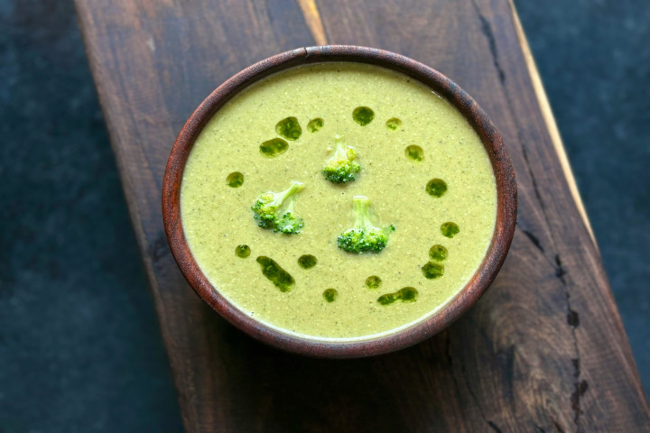

Cream of Asparagus Soup

Photo by: Rahul Sonawane
Original Recipe: Allrecipes
Description
This easy cream of asparagus soup is perfect for making the most of fresh asparagus when it's in season — take advantage!
Ingredients
- 1 pound fresh asparagus, trimmed and cut into 1-inch pieces
- 1 (14.5 ounce) can chicken broth, divided
- ½ cup chopped onion
- 2 tablespoons butter
- 2 tablespoons all-purpose flour
- 1 teaspoon salt, or to taste
- 1 pinch ground black pepper
- 1 cup milk
- ½ cup sour cream
- 1 teaspoon fresh lemon juice
Steps
- Combine asparagus, 1/2 cup chicken broth, and onion in a large saucepan; cover and bring to a boil over high heat. Reduce heat to medium-low and simmer, uncovered, until asparagus is tender, about 12 minutes. Transfer the mixture to a blender; puree until smooth and set aside.
- In the same saucepan, melt butter over medium-low heat. Stir in flour, salt, and pepper; cook, stirring constantly, for 2 minutes.
- Increase heat to medium; add remaining chicken broth, stirring constantly, until the mixture boils. Stir in pureed asparagus and milk.
- Place sour cream in a small bowl and stir in a ladleful of hot soup until blended; pour into the soup and stir in lemon juice. Warm soup through to serving temperature, without boiling. Serve immediately.
- Enjoy!
Home